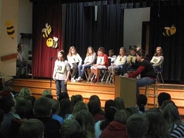
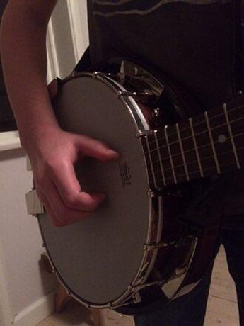

Contestants spell given words aloud letter by letter in knockout rounds, with word, definition and origin asked beforehand.
Heritage note
Part of the living heritage of United States.
Origins
Usually placed in the era of Crossroads and Golden Ages (about 500 to 1500), although its exact origins are uncertain, within the cultural world of The Americas: North America.
Sources
Related entries

Chickenfoot
United States · Board and table games
Texas 42
United States · Board and table games
Bingo
Canada · Board and table games


More from United States


Checkers
Bahamas +1 · Board and table games
Clawhammer banjo
United States · Musical instrumentsPlay preview · in the Lutes & Fiddles of the World app